Mounesh S
Full-Stack AI Engineer · CasaRetail AI · Salem, India
I build complete products, useful AI features, and the data systems underneath them. My work connects React interfaces, Python and Node.js APIs, configuration-driven integrations, and the operational details that keep a production system moving.
The One Piece persona: The Emperor · Ambition: King of the Pirates · Hito Hito no Mi, Model: Nika.
Build with curiosity. Ship with care. Keep the freedom to try the impossible.
Explore the interactive voyage · LinkedIn · Email
Territory, earned
- 40+ enterprise tenants — platform delivery and loyalty-data migrations.
- 200K+ bills and 685K+ product records — a single ingestion run, representing ₹1.01B in invoice value.
- 3.62 ms → 1.85 ms p99 — routing-plane measurements at 2 versus 4 CPUs with two replicas behind Nginx; specific to that configuration.
The voyage

East Blue · 2022 — 2026
B.Tech · Artificial Intelligence & Data Science
Bannari Amman Institute of Technology. A foundation in data, machine learning, and building things that work beyond the classroom.
- 8.24 / 10 CGPA
- Reliance Undergraduate Scholar
- ICETER ’24 research presentation
Water 7 · JUL 2025 — JUL 2026
Software Engineer Intern · CasaRetail AI
Shipped React interfaces, Python and Node.js APIs, subscription billing, and retail ETL. Learned to follow a feature all the way from its data model to a production incident.
- 40+ enterprise tenants
- 200K+ bills in one ingestion run
- PostgreSQL → ClickHouse migrations
The New World · JUL 2026 — PRESENT
Software Engineer · CasaRetail AI
Building configuration-driven vendor routing, end-to-end tenant onboarding, and DSPy-powered product features. Focused on durable ingestion, useful AI, and interfaces operators can trust.
- Versioned integration configuration
- Kafka acknowledgements before acceptance
- AI-assisted source-to-target mapping
The Thousand Sunny dockyard
Production contributions and personal work. Internal and private projects are described without invented public repository links.
Vendor Routing Platform
CasaRetail AI · Internal · React · Apache Camel · Kafka · PostgreSQL
A new vendor. A new configuration. Zero per-vendor deployments.
Built a console and control plane for immutable configuration versions, with a stateless Quarkus / Apache Camel data plane. Validators and mapping expressions compile when configuration loads, keeping database calls out of the request path.
Result: A two-replica setup behind Nginx measured 1.85 ms p99 at 4 CPUs, compared with 3.62 ms at 2 CPUs. This is a configuration-specific benchmark, not an all-workloads guarantee.
Pulse
Personal project · Private · TypeScript · React 18 · Fastify · Zod
An AI content operating system, from source to scheduled story.
Built a React SPA and Fastify API around a shared contract package. Platform capabilities drive the publishing UI; model requests automatically fall back after transient provider failures.
Result: Client and server validate the same Zod schemas. OAuth credentials are encrypted at rest with AES-256-GCM. The interface only offers operations a platform supports.
Tenant Onboarding
CasaRetail AI · Internal · React · Python · DSPy · SQL
From a client’s first connection to their first trusted data sync.
Delivered configuration screens, source-column browsing, typed data-sync forms, connection testing for database, API, and SFTP sources, plus AI-assisted source-to-target column mapping.
Result: Brings connection setup, historical backfill, and a cron-based retry-and-queue scheduler into one onboarding workflow.
Retail Data Streams
CasaRetail AI · Internal · Python · Kafka · NiFi · ClickHouse
The infrastructure below the waterline. Built to keep moving.
Built configuration-driven ETL and Kafka-to-ClickHouse streaming with validation, offset management, retries, dead-letter handling, and failed-record alerts.
Result: One ingestion job processed 200K+ bills and 685K+ product records representing ₹1.01B in invoice value. These are single-run volumes, not a throughput-per-second claim.
Subscription Management
CasaRetail AI · Internal · React · Express · PostgreSQL · Zoho Books
Plans, pricing, renewals, and invoices. One complete product.
Delivered the PostgreSQL schema, Express APIs, and React billing screens for bundles, unit-based pricing, time-bounded discounts, search, and administrator access.
Result: Added scheduled auto-renewal and two-way customer and invoice synchronization with Zoho Books through OAuth 2.0, replacing duplicate manual entry.
Keystroke Anomaly Detection
Research · ICETER ’24 · Python · Scikit-learn · NumPy · Pandas
Recognizing unusual patterns in the rhythm of a keystroke.
Engineered timing features and trained a One-Class SVM to flag unusual typing patterns for endpoint-security research.
Result: Presented as “Advanced Keylogging Framework” at ICETER ’24. No unsupported accuracy or production-deployment claim.
The four Road Poneglyphs
Intelligence — Make AI useful.
DSPy · Model routing · MCP · Scikit-learn
Report summaries and prioritized task briefs from live product data. AI-assisted schema mapping. Structured outputs and model fallbacks inside applications people can use.
Experience — Build the whole product.
React · TypeScript · FastAPI · Node.js
From PostgreSQL schema and typed APIs to React configuration screens, billing workflows, validation, pagination, and operational dashboards.
Data — Keep the fleet moving.
Kafka · NiFi · ClickHouse · PostgreSQL
Configuration-driven ETL, source-to-target mapping, incremental sync, and analytical SQL. Failed records remain inspectable and replayable.
Reliability — Be ready for rough seas.
Docker · Linux · Nginx · Prometheus
Durable acknowledgements, bounded work queues, dead-letter handling, metrics, and production debugging. Measured behavior guides deployment choices.
From the archives
- Reliance Undergraduate Scholar — ₹5,00,000 scholarship.
- TCS CodeVita Season 12 — ranked 971 of 1,347 competitors globally in Round 2.
- B.Tech, Artificial Intelligence and Data Science — CGPA 8.24/10.
- ICETER ’24 — Advanced Keylogging Framework research presentation.
The Den Den Mushi is listening
AI products, full-stack builds, data pipelines, and systems that need a steady hand.
World Economic Journal · public GitHub activity
Activity will appear after the first successful Recent activity workflow run.